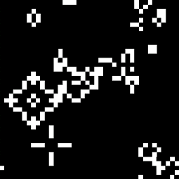

TPJ One-Liner #11The Game Of Life

use PDL; use PDL::Image2D;
use PDL::Graphics::TriD;nokeeptwiddling3d;
$d=byte(random(zeroes(40,40))>0.85);
$k=byte [[1,1,1],[1,0,1],[1,1,1]];
do{ imagrgb [$d]; $s=conv2d($d,$k);
$d&=($s>4);$d&=($s>1);$d|=($s==3);}
while (!twiddle3d);
Courtesy of Robin Williams. |
TPJ One-Liner #12DeMorgan's Rule:
if (!$a || $b != $c) { ... }
is equivalent to
unless ( $a && $b == $c ) { ... }
|